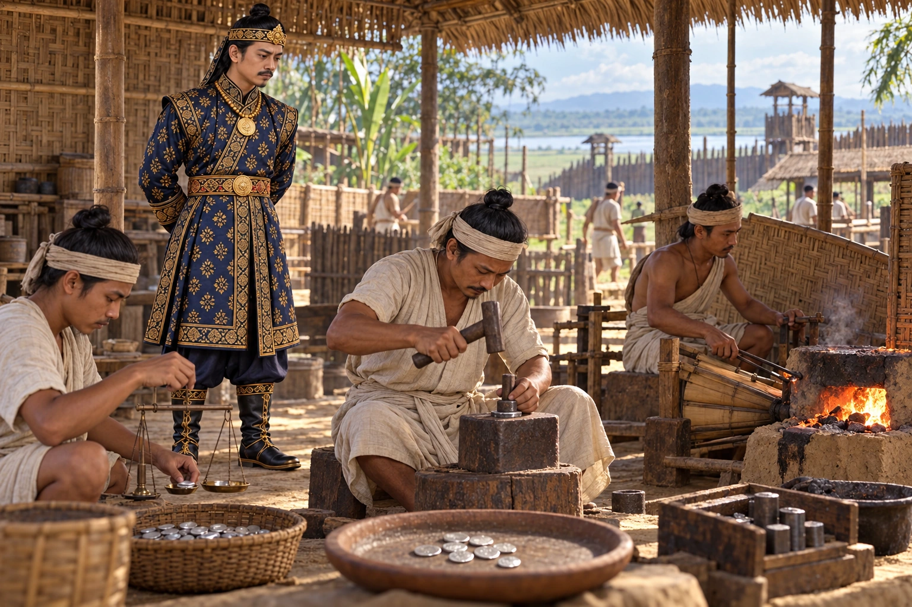

The First Ahom Coins Are Struck
1648–1663 · Against the Mughal Empire

Coins first appear under Jayadhwaj Singha. The old belief that Suklenmung struck the first Ahom coins comes from misread coins of Chakradhwaj Singha.
Workshop, hand tools and royal visit are illustrative. Small silver coin marks are not an authenticated transcription of a specific issue.
People: Jayadhwaj Singha (Sutamla)
Open this scene in the interactive archive · Follow this event on MAP